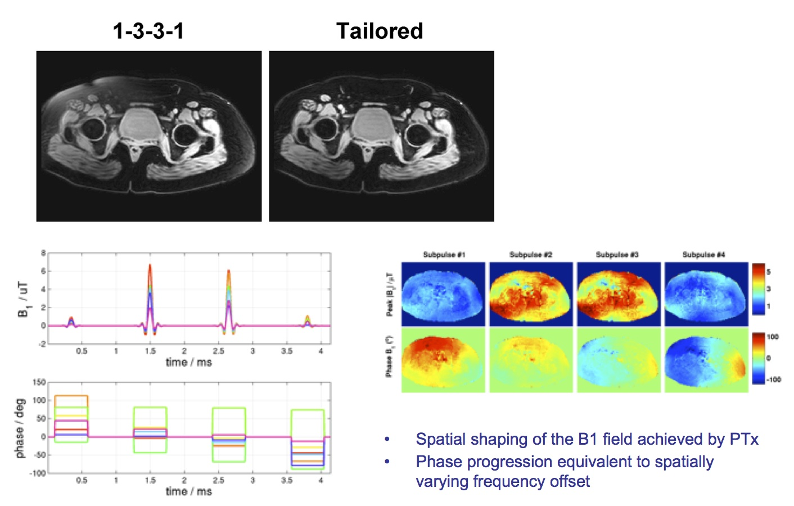
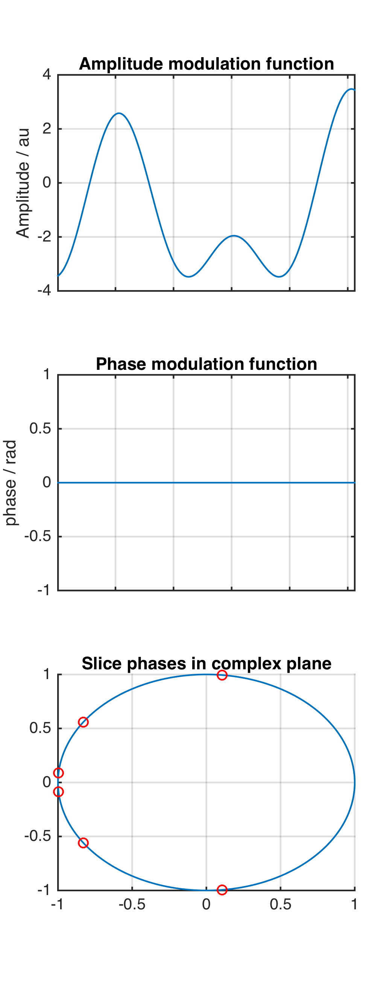
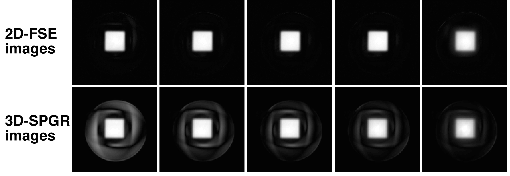
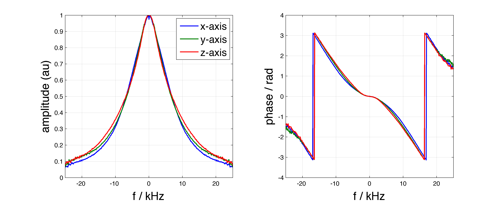

# RF Pulse Design
## Contents
* [Water Selective Pulses](#watpulse)
* [AM only multiband pulses](#ampulse)
* [Phase relaxed localized excitation pulses for CPMG](#cpmg)
* [Gradient distortion corrected VERSE](#reverse)
<a name="watpulse"></a>
## [Water selective pulses](https://github.com/mriphysics/water_selective_pulses/#readme)

Tailored spectral spatial pulses for counteracting B0 shim errors with parallel transmit. Details in this [publication](http://dx.doi.org/10.1002/mrm.22260)
Code can be found in the [repo](https://github.com/mriphysics/water_selective_pulses). The release contains example test data (B0/B1 field maps from 3T PTx system).
<a name="ampulse"></a>
## [Amplitude Modulated Multi-band pulses](https://github.com/mriphysics/AM_multiband/#readme)
Simple [script](https://github.com/mriphysics/AM_multiband) to compute optimized slice phase offsets for minimum peak amplitude AM only multi-band RF pulses. As presented at [ISMRM 2015](https://kclpure.kcl.ac.uk/portal/files/35847819/mb_AM_submitted.pdf)

<a name="cpmg"></a>
## [Phase Relaxed Localized Excitation pulses for CPMG sequences](https://github.com/mriphysics/phase_relaxed_CPMG_excitation/#readme)

Pulse design method for use with localized excitation in CPMG fast spin echo sequences. Selective violation of the CPMG condition is used as a means for improving background suppression. See [this publication](http://onlinelibrary.wiley.com/doi/10.1002/mrm.25996/abstract) for more details. Code is [here](https://github.com/mriphysics/phase_relaxed_CPMG_excitation/).
<a name="reverse"></a>
## [Gradient Impulse Response corrected VERSE](https://github.com/mriphysics/reverse-GIRF/#readme)

VERSE based pulse design with additional inclusion of gradient impulse response function. See the [readme](https://github.com/mriphysics/reverse-GIRF/#readme) for detailed information.